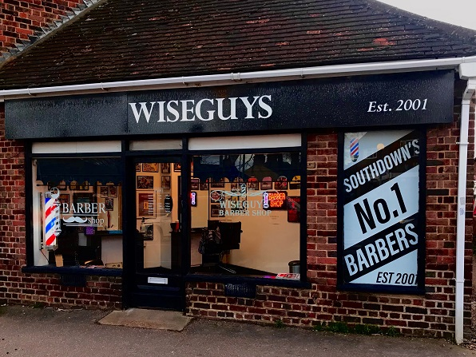

Welcome to Wise Guys Barbers!

Wise Guys is your local Gents' barbers. In business since 2001, and located at the junction of Southdown Road and Piggottshill Lane, in Southdown, Harpenden, we offer a friendly, professional haircutting service.
COVID-19 SERVICE UPDATE from Mark
Due to Covid-19 WiseGuys will be making some SERIOUS changes to ensure EVERYONE is safe!
- My Barbershop is a very unique and safe environment, as your booking hires out me and my shop exclusively for your haircut.
- Temperature check before you walk in.
- Sanitisation of all equipment between each booking
During the prior lockdown I have completed a deep clean of the shop, and this will continue as I reopen – allowing time between customers to wipe down all surfaces as well as disinfect tools between customers.
Therefore, I will be making the following fundamental changes:
- Online bookings (appointments only)
- Card payment only (no cash)
I will only be taking online bookings from now on, this will ensure there is time allocated to limit one customer in the shop at a time and to complete the deep clean between customers.
I will also no longer be accepting cash as payment due to the potential risks, and am pleased to say all debit and credit cards will now be accepted!
Under the new Government guidelines hairdressers should be open by 4th July.
Thank you for your support in this matter – let’s hope I can fix all the home family butchered haircuts; which I am sure you have all had!!
Re-opening 4th of July so please book your appointment online now to avoid disappointment.
Take Care, Mark